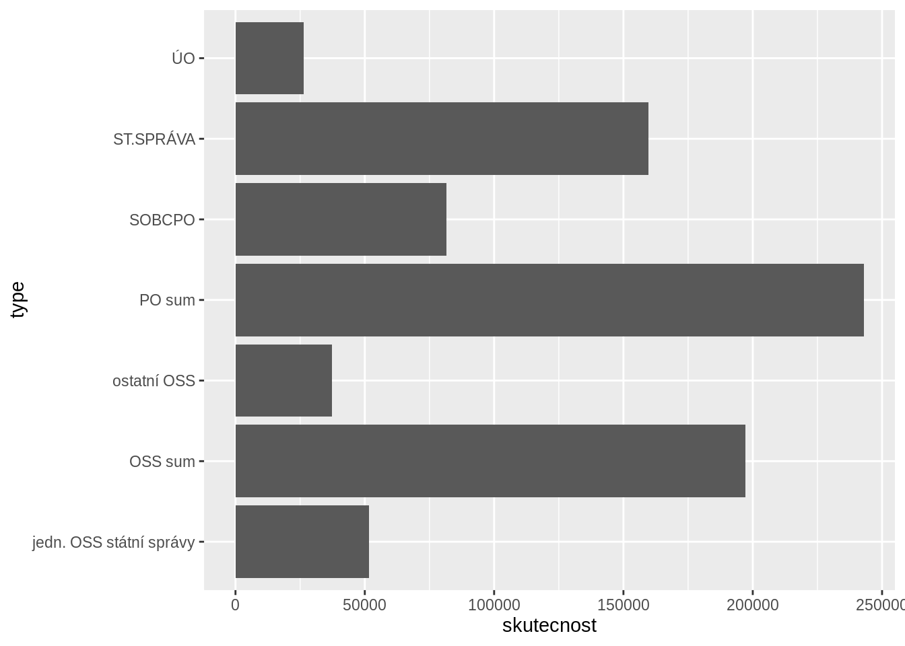
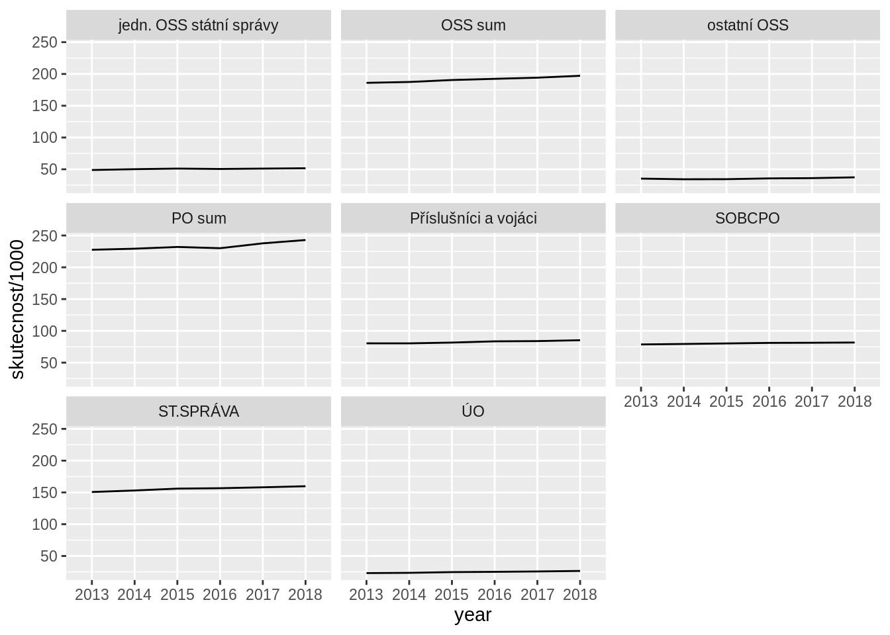
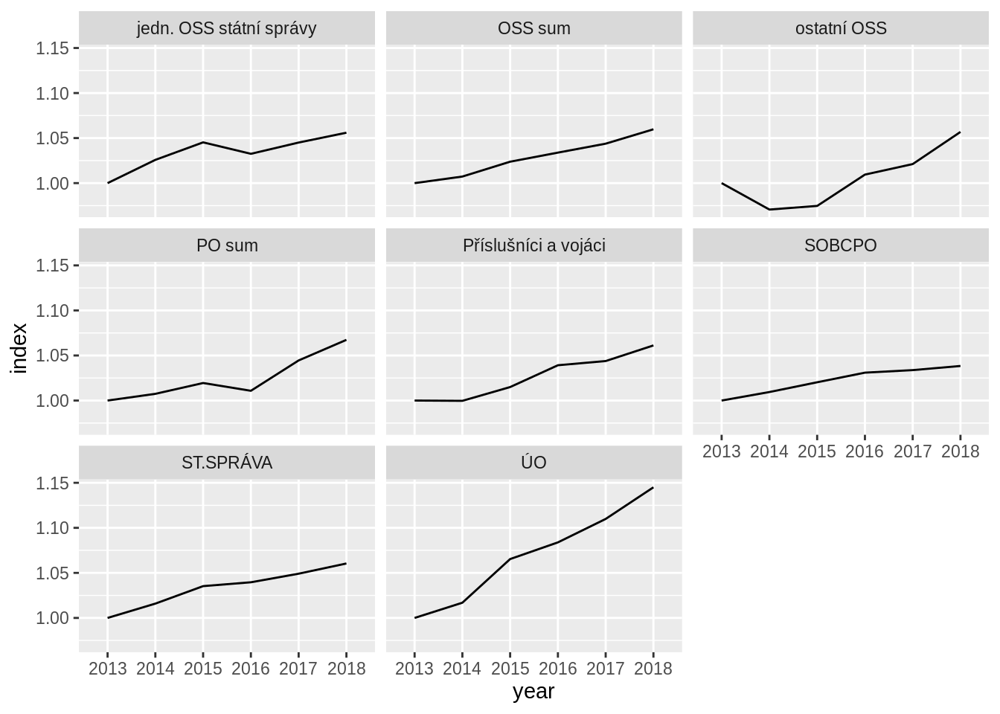
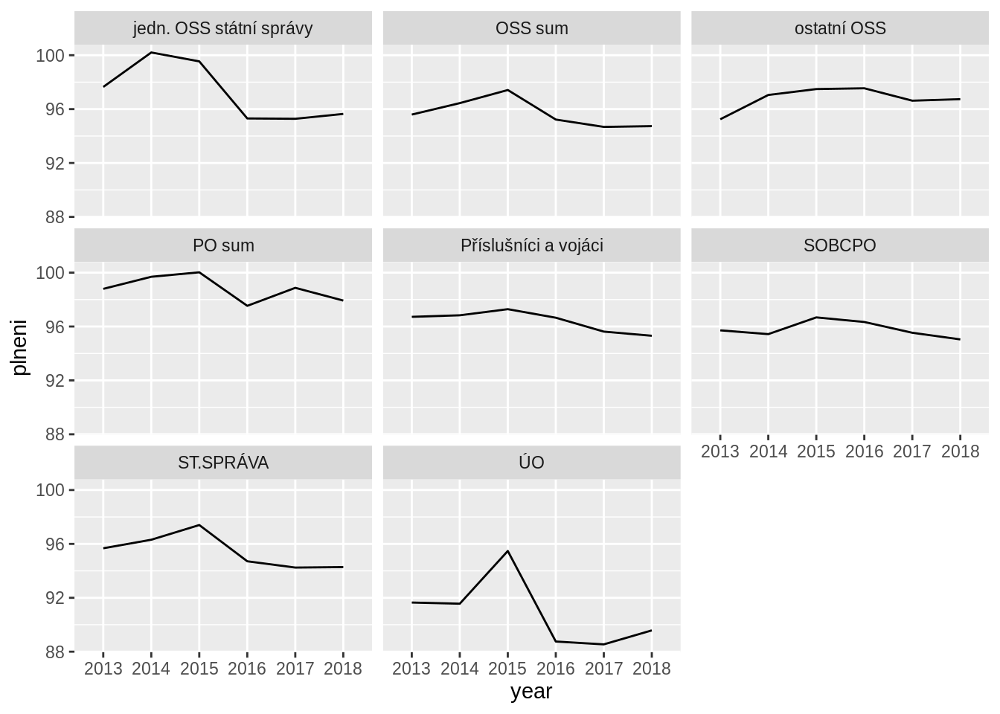

knitr::opts_chunk$set(echo = T, warning = F, message = F)
library(readr)
library(dplyr)
library(ggplot2)
library(tidyr)
Basic counts by group
Table
dt %>%
filter(kap_num == "C E L K E M" & indicator == "count" &
year %in% c(2013, 2018)) %>%
filter(!(type %in% c("PO sum", "Příslušníci a vojáci"))) %>%
mutate(skutecnost = (round(skutecnost)/1e3) %>% round(1)) %>%
select(type, skutecnost, year) %>%
pivot_wider(names_from = year, values_from = skutecnost) %>%
select(type, `2013`, `2018`) %>% knitr::kable()
| ÚO |
23.1 |
26.5 |
| jedn. OSS státní správy |
48.9 |
51.6 |
| SOBCPO |
78.6 |
81.7 |
| ST.SPRÁVA |
150.7 |
159.8 |
| ostatní OSS |
35.3 |
37.4 |
| OSS sum |
186.0 |
197.1 |
159.8 - 26.5 - 81.7
## [1] 51.6
Chart
dt %>%
filter(kap_num == "C E L K E M" & indicator == "count" & year == 2018) %>%
filter(!(type %in% c("Příslušníci a vojáci"))) %>%
# mutate(skutecnost = (round(skutecnost)/1e3) %>% round(1)) %>%
# select(type, skutecnost)
select(type, skutecnost) %>% ggplot() + geom_col(aes(type, skutecnost)) +
coord_flip()

Over time
absolutes
dt %>%
filter(kap_num == "C E L K E M" & indicator == "count") %>%
ggplot() +
geom_line(aes(x = year, y = skutecnost/1e3, group = type)) +
facet_wrap(~type)

Change from 2013 base
dt %>%
filter(kap_num == "C E L K E M" & indicator == "count") %>%
group_by(type) %>%
arrange(year) %>%
mutate(index = skutecnost/first(skutecnost)) %>%
ggplot() +
geom_line(aes(x = year, y = index, group = type)) +
facet_wrap(~type)

Plan vs. reality
dt %>%
filter(kap_num == "C E L K E M" & indicator == "count") %>%
ggplot() +
geom_line(aes(x = year, y = plneni, group = type)) +
facet_wrap(~type)

dt %>%
filter(kap_num == "C E L K E M" & indicator == "cost") %>%
filter(year == 2018) %>%
select(rozp, skutecnost, year, type) %>%
mutate_at(vars(skutecnost, rozp), ~(./1e9) %>% round(1))
LS0tCnRpdGxlOiAiUG/EjXR5IMO6xZllZG7DrWvFrzogMjAxMy0yMDE4IgphdXRob3I6ICJQZXRyIEJvdWNoYWwiCmRhdGU6ICIxMS8yLzIwMTkiCm91dHB1dDogCiAgaHRtbF9kb2N1bWVudDoKICAgIGRmX3ByaW50OiBwYWdlZAogICAgY29kZV9kb3dubG9hZDogVAotLS0KCmBgYHtyIHNldHVwLCBlY2hvID0gVCwgbWVzc2FnZT1GLCB3YXJuaW5nPUZ9CmtuaXRyOjpvcHRzX2NodW5rJHNldChlY2hvID0gVCwgd2FybmluZyA9IEYsIG1lc3NhZ2UgPSBGKQpsaWJyYXJ5KHJlYWRyKQpsaWJyYXJ5KGRwbHlyKQpsaWJyYXJ5KGdncGxvdDIpCmxpYnJhcnkodGlkeXIpCmBgYAoKCmBgYHtyIGluY2x1ZGU9Rn0KZHQgPC0gcmVhZF9yZHMoImRhdGEtaW50ZXJpbS9vYmplbXlfcG9jdHlfc2NyYXBlZF9yYXdfMjAxMl8yMDE4LnJkcyIpCmR0CmBgYAoKIyBCYXNpYyBjb3VudHMgYnkgZ3JvdXAgey50YWJzZXR9CgojIyBUYWJsZQoKYGBge3J9CmR0ICU+JSAKICBmaWx0ZXIoa2FwX251bSA9PSAiQyBFIEwgSyBFIE0iICYgaW5kaWNhdG9yID09ICJjb3VudCIgJiAKICAgICAgICAgICB5ZWFyICVpbiUgYygyMDEzLCAyMDE4KSkgJT4lIAogIGZpbHRlcighKHR5cGUgJWluJSBjKCJQTyBzdW0iLCAiUMWZw61zbHXFoW7DrWNpIGEgdm9qw6FjaSIpKSkgJT4lIAogIG11dGF0ZShza3V0ZWNub3N0ID0gKHJvdW5kKHNrdXRlY25vc3QpLzFlMykgJT4lIHJvdW5kKDEpKSAlPiUKICBzZWxlY3QodHlwZSwgc2t1dGVjbm9zdCwgeWVhcikgJT4lIAogIHBpdm90X3dpZGVyKG5hbWVzX2Zyb20gPSB5ZWFyLCB2YWx1ZXNfZnJvbSA9IHNrdXRlY25vc3QpICU+JSAKICBzZWxlY3QodHlwZSwgYDIwMTNgLCBgMjAxOGApICU+JSBrbml0cjo6a2FibGUoKQpgYGAKCmBgYHtyIGluY2x1ZGU9VH0KMTU5LjggLSAyNi41IC0gODEuNwpgYGAKCiMjIENoYXJ0CgpgYGB7cn0KZHQgJT4lIAogIGZpbHRlcihrYXBfbnVtID09ICJDIEUgTCBLIEUgTSIgJiBpbmRpY2F0b3IgPT0gImNvdW50IiAmIHllYXIgPT0gMjAxOCkgJT4lIAogIGZpbHRlcighKHR5cGUgJWluJSBjKCJQxZnDrXNsdcWhbsOtY2kgYSB2b2rDoWNpIikpKSAlPiUgCiAgIyBtdXRhdGUoc2t1dGVjbm9zdCA9IChyb3VuZChza3V0ZWNub3N0KS8xZTMpICU+JSByb3VuZCgxKSkgJT4lIAogICMgc2VsZWN0KHR5cGUsIHNrdXRlY25vc3QpCiAgc2VsZWN0KHR5cGUsIHNrdXRlY25vc3QpICU+JSBnZ3Bsb3QoKSArIGdlb21fY29sKGFlcyh0eXBlLCBza3V0ZWNub3N0KSkgKwogIGNvb3JkX2ZsaXAoKQpgYGAKCiMgT3ZlciB0aW1lIHsudGFic2V0fQoKIyMgYWJzb2x1dGVzCgpgYGB7cn0KZHQgJT4lIAogIGZpbHRlcihrYXBfbnVtID09ICJDIEUgTCBLIEUgTSIgJiBpbmRpY2F0b3IgPT0gImNvdW50IikgJT4lIAogIGdncGxvdCgpICsKICBnZW9tX2xpbmUoYWVzKHggPSB5ZWFyLCB5ID0gc2t1dGVjbm9zdC8xZTMsIGdyb3VwID0gdHlwZSkpICsKICBmYWNldF93cmFwKH50eXBlKQpgYGAKCiMjIENoYW5nZSBmcm9tIDIwMTMgYmFzZQoKYGBge3J9CmR0ICU+JSAKICBmaWx0ZXIoa2FwX251bSA9PSAiQyBFIEwgSyBFIE0iICYgaW5kaWNhdG9yID09ICJjb3VudCIpICU+JSAKICBncm91cF9ieSh0eXBlKSAlPiUgCiAgYXJyYW5nZSh5ZWFyKSAlPiUgCiAgbXV0YXRlKGluZGV4ID0gc2t1dGVjbm9zdC9maXJzdChza3V0ZWNub3N0KSkgJT4lIAogIGdncGxvdCgpICsKICBnZW9tX2xpbmUoYWVzKHggPSB5ZWFyLCB5ID0gaW5kZXgsIGdyb3VwID0gdHlwZSkpICsKICBmYWNldF93cmFwKH50eXBlKQpgYGAKCiMjIFBsYW4gdnMuIHJlYWxpdHkKCmBgYHtyfQpkdCAlPiUgCiAgZmlsdGVyKGthcF9udW0gPT0gIkMgRSBMIEsgRSBNIiAmIGluZGljYXRvciA9PSAiY291bnQiKSAlPiUgCiAgZ2dwbG90KCkgKwogIGdlb21fbGluZShhZXMoeCA9IHllYXIsIHkgPSBwbG5lbmksIGdyb3VwID0gdHlwZSkpICsKICBmYWNldF93cmFwKH50eXBlKQpgYGAKCgpgYGB7cn0KZHQgJT4lIAogIGZpbHRlcihrYXBfbnVtID09ICJDIEUgTCBLIEUgTSIgJiBpbmRpY2F0b3IgPT0gImNvc3QiKSAlPiUgCiAgZmlsdGVyKHllYXIgPT0gMjAxOCkgJT4lIAogIHNlbGVjdChyb3pwLCBza3V0ZWNub3N0LCB5ZWFyLCB0eXBlKSAlPiUgCiAgbXV0YXRlX2F0KHZhcnMoc2t1dGVjbm9zdCwgcm96cCksIH4oLi8xZTkpICU+JSByb3VuZCgxKSkKYGBgCgoK